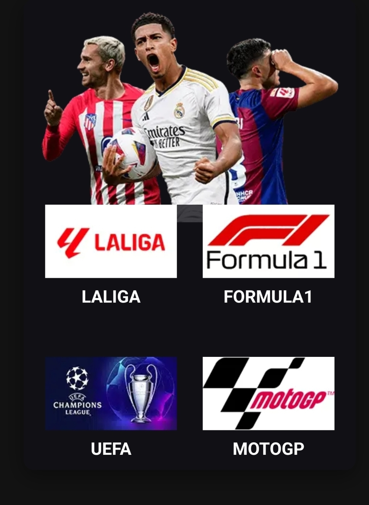

💸 Solo 50 € al año (12 meses)
🎬 Más de 20,000 Canales en Vivo y +50,000 Películas y Series
📺 Español y Multilenguaje | Deportes, Cine, Series y Más
🚀 Calidad SD, HD y UHD | Servidores Estables
🎁 Fútbol: LaLiga, Champions, Premier y más
🔒 Soporte 24/7 | Prueba Gratuita 30 Días | Sin Permanencia
¿Buscas el mejor servicio IPTV en España en 2025? Te ofrecemos más de 20.000 canales en vivo, incluyendo todo el fútbol nacional e internacional en HD/UHD, sin cortes ni bloqueos.
Compatible con Smart TV, Fire TV, Android, iPhone y más. Nuestro sistema es rápido, estable y con soporte personal por Telegram.
Ideal si quieres dejar de pagar el cable tradicional. Sin instalaciones, sin complicaciones.
Sí, tienes 30 días gratis sin compromiso.
Sí, funciona en Smart TV, Android, Fire TV, iPhone y más.
Sí, atiendo directamente por Telegram 24/7.
El uso es bajo tu responsabilidad. Ofrecemos acceso a contenido público de forma estable.